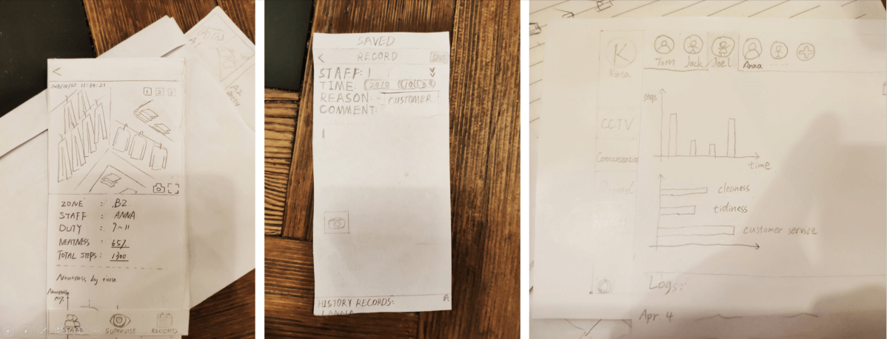
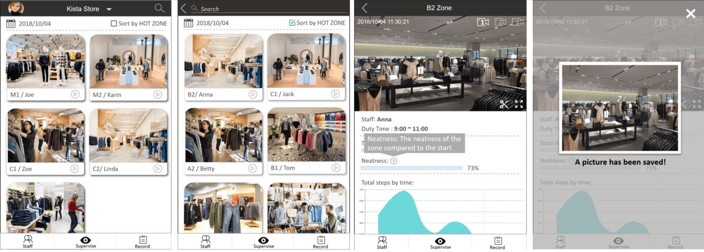
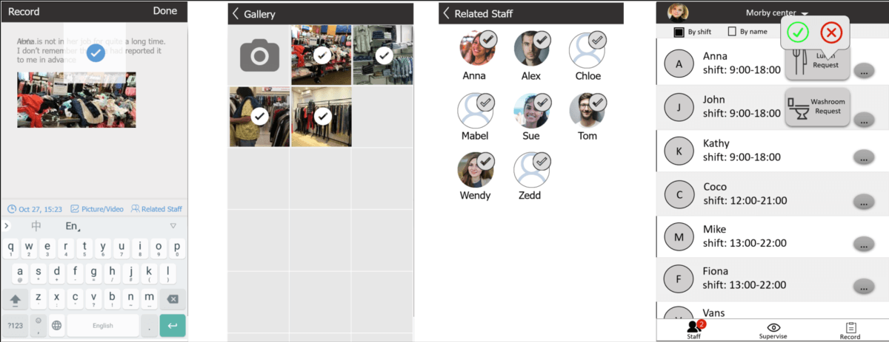
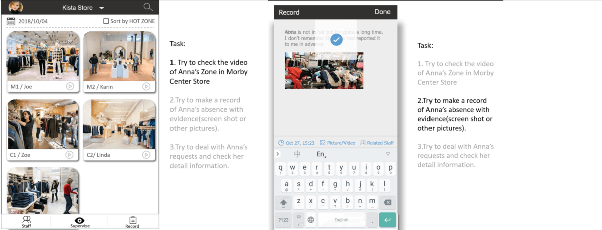
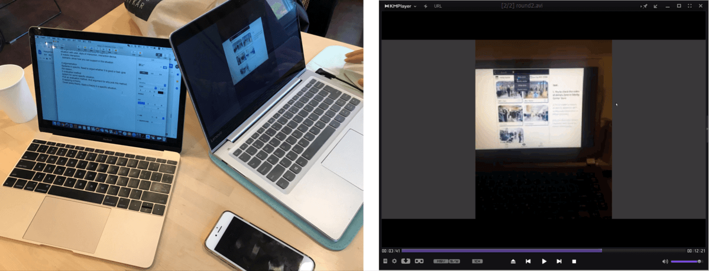
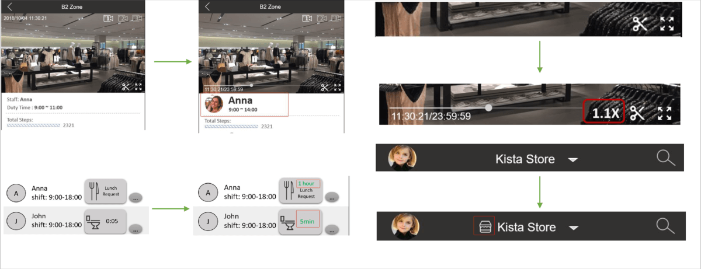

Course Project:Design the Prototype for Shopwalkers
Paper Prototyping Prototyping Evaluation User Testing
ContentS
Background
Brainstorming
Paper Prototyping
Computerized Prototype
Evaluation
Results
Conclusion
Background
The task of this exercise is to design a screen-based interactive system for shop walkers who work in a (or several) stores watching customers or staff. This exercise can be seen as a summary of the course HCI Principles and Design which I took in KTH in 2018.
Though the design work is still rough, the exercise is valuable to me since I had the chance to practice the whole design process with the help of HCI principles.
Brainstorming
The first phase of the design process is brainstorming and sketching. In order to know exactly who would our users be and their situation, we first did some research on google and interviewed some staffs who work in the clothing retail industry. We found out that shopwalkers’ job is similar to shop managers who are responsible for watching staffs and evaluating their performance.
In the brainstorming part, all our team members (actually 3) were encouraged to speak out our ideas. In my opinion, in the brainstorming process, the most important thing is to get the ideas flowing. And to generate plenty of ideas, it is better not to criticize ideas but encourage members to talk.
Paper Prototyping
At this phase, we chose two of our sketches to create the paper prototypes, one is for the mobile device and the other one is for the iPad device:

Honestly speaking, I hardly used paper prototypes during my past work. After learning to use this kind of low-fidelity prototyping skill, I found it a really useful tool to help sort out the thoughts of design ideas in the early stage. It can help designers focus on the broad design ideas, such as structure and key functionality requirements, instead of other things like colors and patterns which can be polished later. It is easy to create, and more importantly, it can aid the process of generating and evaluating possible design solutions in early stages.
In this case, we took the paper prototypes to the shopping mall, and luckily we found managers form HM and Zara to help test the paper prototype. In this process, we asked the users’ permission to record a video of the testing process which only includes their fingers and the prototypes, and we also took notes of valuable feedbacks and the video time of each feedback so that we could go back to review it later.
Computerized Prototype in PowerPoint
Based on previous user feedback we had collected, we designed a screen-based prototype by using PowerPoint. The reason why we use PowerPoint instead of other powerful prototyping tools is that the key issue of this exercise is the design process instead of creating fascinating prototypes by using powerful tools, so we decided to use this simple tool:


Evaluation
To evaluate the prototype, we made 2 iterations of user testing and had 2 different user representatives for each iteration. We improved our prototype according to these testing results. Also, we made a testing plan before the testing:
- Firstly, we decided the role of each member. My role in the testing process was as an observer to observe users’ behaviors and record important feedback of users.
- We chose users who have the needs of watching on staffs, checking their performance, and dealing with their requests. In this case, we contacted some shop managers to conduct the tests.
- We set 3 tasks for users to test the main functions of the system:
- We did some remote testing since some of our subjects were in other countries:
Results
After user testing, we got several good advice to improve the user experience, for example:
- We re-designed the video playing window so that it can support users changing the playback speed for quick check.
- The term “neatness” in the detail page was confusing, instead, we used the word “tidiness” according to users’ feedback.
We also got some ideas of the product design, for example, we could also support users to check and modify the shift schedule of staffs.
Conclusion
The work we have done is still rough in this exercise, but it is a good chance for us to understand and practice the design process. User testing is a good way for designers to evaluate their work and gain insights of the key needs of real users, and thus to better improve the user experience and finally add values to users via the design solutions.